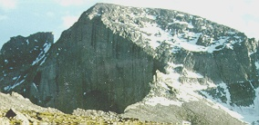

Longs Peak: North Face
The North Face
route of Longs Peak is the perfect tour for the beginner hiker/climber who
wants to reach the summit following a different route from the main trail.
The North Face is the most direct and shortest route and does not have the
crowds you'd find in the more popular Keyhole route. The views from the North Face
are spectacular and provide some of the finest scenery in the park.
Difficulty Level: Beginner
Time: Allow for one day
Physical stress: Mild to moderate